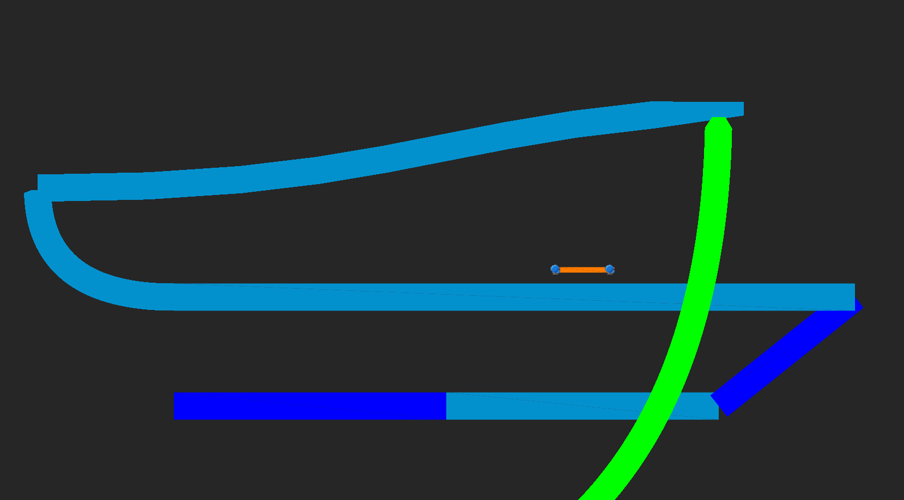

Gliederung
1. Einführung
1.1 Was sind Bezierkurven
1.2 Wo findet man Bezierkurven
2. Zeichnen von Bezierkurven
2.1 Nutzung des De Casteljau's Algorithmus
3. Anwendung von Bezierkurven beim Erstellen von Software
3.1 Anwendung
3.2 Ineffizienz und Schwierigkeiten in der Praxis
3.3 Mathematischer Lösungsansatz
4. Zussamenfassung
5. Anhang
5.1 Literaturangabe
5.2 Weitere Links
5.3 Code
5.4 Demos
1.1 Was sind Bezierkurven
Der französische Ingenieur Pierre Étienne Bézier\(^{A1}\), geboren 1910 in Paris, entwickelte in den 60er Jahren eine Gestaltungsmöglichkeit von Karosserieformen für seinen damaligen Arbeitgeber Renault. Seit 1968 ist sein System zur "Freiform Kurven und Oberflächen Design" ("interactive free-form curve and surface design and 3D milling for manufactoring clay models and masters"\(^{A2}\)) bei Renault in Nutzung.
Auch der französische Mathematiker Paul de Faget de Casteljau, geboren 1930, beschäftigte sich im 20ten Jahrhundert mit der Modelierung von Kurven und Flächen\(^{A3}\). Als Physiker bei Citroën arbeitete er ebenfalls an der Modellierung von Karosserien mithilfe von Bezierkurven. Unabhängig von Pierre Étienne Bézier entwickelte er den nach ihm benannten Casteljau Algorithmus zur Beschreibung von Bezierkurven.
Beide entwickelten das Konzept unabhängig voneinander, wobei der Name der Bezierkurve sich durchsetzte. Wohingegen der nach Casteljau benannte Algorithmus die bekannteste Darstellungsform ist.
Eine Bezierkurve wird durch mindestens zwei sogenannte Kontrollpunkte (sowohl 2-dimensional als auch 3-dimensional) beschrieben, welche den Verlauf der Kurve beeinflussen. Die Kontrollpunkte benannt \(P_{0}\) bis \(P_{n}\), wobei '\(n+1\)' den Grad der Kurve angibt. Der erste und letzte Kontrollpunkt sind die Endpunkte der Kurve und berühren diese somit, alle weiteren Kontrollpunkte \(P_{1} - P_{n-1}\), soweit vorhanden beeinflussen den Verlauf der Kurve, liegen aber, in der Regel nicht auf dieser.

Demo 1.1.1 Bezierkurve mit 4 Kontrollpunkten (BezierkurveGrad4)
Mathematisch wird die Kurve \(B\) in Abhängigkeit von \( t \) als \(B(t)\) angegeben, wobei \( 0\leq{}t\leq{}1 \) ist. Und es gilt \( B(0)=P_{0} \) und \( B(1)=P_{n} \). Bei \( n \) Kontrollpunkten gilt somit\(^{A13}\):
$$ B(t) = \sum_{i=0}^{n}{^nC_{i} (1-t)^{n-i} t^i P_{i}} , 0 \leq t \leq 1 $$
Oder auch:
$$ B(t) = \sum_{i=0}^{n}{\frac{n!}{i! (n - i)!} (1-t)^{n-i} t^i P_{i}} , 0 \leq t \leq 1$$
Hier lässt sich das vorangegangene Verhalten gut erkennen bei kleinem \( t \) setzt sich \( P_{0} \) durch und bei großem \( t \) setzt sich \( P_{n} \) durch.
1.1 Was sind Bezierkurven
Der französische Ingenieur Pierre Étienne Bézier\(^{A1}\), geboren 1910 in Paris, entwickelte in den 60er Jahren eine Gestaltungsmöglichkeit von Karosserieformen für seinen damaligen Arbeitgeber Renault. Seit 1968 ist sein System zur "Freiform Kurven und Oberflächen Design" ("interactive free-form curve and surface design and 3D milling for manufactoring clay models and masters"\(^{A2}\)) bei Renault in Nutzung.
Auch der französische Mathematiker Paul de Faget de Casteljau, geboren 1930, beschäftigte sich im 20ten Jahrhundert mit der Modelierung von Kurven und Flächen\(^{A3}\). Als Physiker bei Citroën arbeitete er ebenfalls an der Modellierung von Karosserien mithilfe von Bezierkurven. Unabhängig von Pierre Étienne Bézier entwickelte er den nach ihm benannten Casteljau Algorithmus zur Beschreibung von Bezierkurven.
Beide entwickelten das Konzept unabhängig voneinander, wobei der Name der Bezierkurve sich durchsetzte. Wohingegen der nach Casteljau benannte Algorithmus die bekannteste Darstellungsform ist.
Eine Bezierkurve wird durch mindestens zwei sogenannte Kontrollpunkte (sowohl 2-dimensional als auch 3-dimensional) beschrieben, welche den Verlauf der Kurve beeinflussen. Die Kontrollpunkte benannt \(P_{0}\) bis \(P_{n}\), wobei '\(n+1\)' den Grad der Kurve angibt. Der erste und letzte Kontrollpunkt sind die Endpunkte der Kurve und berühren diese somit, alle weiteren Kontrollpunkte \(P_{1} - P_{n-1}\), soweit vorhanden beeinflussen den Verlauf der Kurve, liegen aber, in der Regel nicht auf dieser.
Demo 1.1.1 Bezierkurve mit 4 Kontrollpunkten (BezierkurveGrad4)
Mathematisch wird die Kurve \(B\) in Abhängigkeit von \( t \) als \(B(t)\) angegeben, wobei \( 0\leq{}t\leq{}1 \) ist. Und es gilt \( B(0)=P_{0} \) und \( B(1)=P_{n} \). Bei \( n \) Kontrollpunkten gilt somit\(^{A13}\):
$$ B(t) = \sum_{i=0}^{n}{^nC_{i} (1-t)^{n-i} t^i P_{i}} , 0 \leq t \leq 1 $$
Oder auch:
$$ B(t) = \sum_{i=0}^{n}{\frac{n!}{i! (n - i)!} (1-t)^{n-i} t^i P_{i}} , 0 \leq t \leq 1$$
Hier lässt sich das vorangegangene Verhalten gut erkennen bei kleinem \( t \) setzt sich \( P_{0} \) durch und bei großem \( t \) setzt sich \( P_{n} \) durch.
1.2 Wo findet man Bezierkurven
Heutzutage sind Bezierkurven in vielen Bereichen zu finden. Insbesondere in der Softwareindustrie stolpert man an jeder Ecke über die Verwendung von Bezierkurven.
Viele Bildbearbeitungsprogramme nutzen Bezierkurven um Farbkorrekturen zu ermöglichen oder um Kurven einzufügen.
In Gimp\(^{A4}\) zum Beispiel lassen sich die einzelnen Farbkanäle, Rot, Grün, Blau und Alpha/Transparenz mithilfe einer Bezierkurve anpassen.

Bild 1.2.1 Farbkurveneditor Gimp
Aber auch in Programmen wie Paint.NET\(^{A5}\) gibt es Tools, die einem Erlauben mit Hilfe von Bezierkurven Grafiken zu erstellen. Durch das Bewegen von zwei Konrollpunkten lässt sich eine Kurve erstellen, welche von einem Punkt zum anderen verläuft und durch weitere Kontrollpunkte beeinflusst wird.
Bild 1.2.2 Bezierkurve in Paint.NET
Beim Erstellen von Animationen und dem Beschreiben von Bewegungen werden Bezierkurven genutzt um flüssige Bewegungsabläufe und Übergänge zu erstellen, wie zum Beispiel im Animtionseditor der Spieleengine Unity\(^{A14}\).

Animation 1.2.3 Animierte Schlange in Unity
Auch viele Mindmap oder Graphing Tools nutzen Bezierkurven um Beziehungen zwischen Elementen kenntlich zu machen. Wie auch in diesem Bild aus einem von mir erstellten Nachbau des Lehrprogramms LogikSim\(^{A6}\), mit Hilfe dessen man Stromschaltkreise simulieren kann.
Bild 1.2.4 LogikSim Clone{A7}
Das kürzlich im Informatikunterricht entstandene Softwareprojekt zur Effizienzoptimierung von Bahnverbindungen und Zugstrecken nutzt Bezierkurven um den Verlauf der Schienen darzustellen\(^{A15}\).

Bild 1.2.5 Railway Informatikprojekt
Was viele nicht wissen, auch bei Schriftarten kommen Bezierkurven zum Einsatz.
Dateiformate wie zum Beispiel TrueType\(^{A8}\) oder OpenType\(^{A9}\) nutzen Bezierkurven um die Umrandung (outline) einzelner Buchstaben mathematisch zu beschreiben. Dies verhindert, dass die Buchstaben bei Änderung der Schriftgröße nicht unscharf oder verschwommen werden. Auf Abruf kann für jede Schriftgröße vom entsprechenden Programm zur Laufzeit das passende Bild der Buchstaben generiert werden. Dieses Verfahren wird Fontrasterization gennant\(^{A10}\).

Bild 1.2.6 Font Rasterization
Bild\(^{A11}\)
2. Zeichnen von Bezierkurven
Wir haben gesehen, dass Bezierkurven in vielen Bereichen Anwendung finden und jeder von uns sie schon einmal verwendet hat, auch wenn es nur durch das Schreiben eines Textes in Microsoft Word\(^{A16}\) war.
Nun wollen wir jedoch nicht mehr anschauen, wo wir Bezierkurven finden, sondern wir wollen selber Bezierkurven zeichnen. Vorerst wollen wir uns hierzu mit dem De Casteljau's Algorithmus beschäftigen.
2.1 Nutzung des De Casteljau's Algorithmus
Der nach Paul de Casteljau benannte Algorithmus, ist ein rekursiver Algorithmus zur näherungsweisen Auswertung von Bezierkurven, mithilfe linearer Interpolation. Welche durch theoretische unendliche Verfeinerung die Bezierkurve formt.
Linear interpolation is the simplest method of getting values at positions in between the data points. The points are simply joined by straight line segments. Each segment (bounded by two data points) can be interpolated independently. The parameter mu defines where to estimate the value on the interpolated line, it is 0 at the first point and 1 and the second point. For interpolated values between the two points mu ranges between 0 and 1. Values of mu outside this range result in extrapolation.
-- Paul Bourke\(^{A12}\)
2.1.1 Beispiel mit zwei Kontrollpunkten
Zur Interpolation zweier Zahlen wird folgende Funktion genutzt: $$ lerp(a,b,t) = (1-t)*a + t * b, 0 \leq t \leq 1 $$
Und eingesetzt:
$$ lerp(t) = (1-t)*P_{0} + t * P_{1} $$
Schauen wir uns nun die Bezierfunktion mit zwei Kontrollpunkten an: $$B(t) = \sum_{i=0}^{n} \frac{n!}{i! (n - i)!} (1-t)^{n-i} t^i P_{i} $$
$$ B_{2}(t) = \sum_{i=0}^{1} \frac{1!}{i! (1 - i)!} (1-t)^{1-i} t^i P_{i} = [\frac{1!}{0! (1 - 0)!} (1-t)^{1-0} t^0 P_{0}] + [\frac{1!}{1! (1 - 1)!} (1-t)^{1-1} t^1 P_{1}] $$ $$ = [(1-t)P_{0}] + [tP_{1}] = (1-t)P_{0} + t*P_{1} $$
Also ist eine Bezierkurve des zweiten Grades gleich einer linearen Interpolation.

Demo 2.1.1 Lineare Bezierkurve abhängig von t (LinearBezierAnimatedT)
Es lässt sich erkennen, dass der blaue Punkt von \(P_{0}\) bei \(t=0\) zu \(P_{1}\) bei \(t=1\) wandert. Also lässt sich eine lineare Bezierkurve zeichnen, indem man kleine Intervalle von \(t\) berechnet und verbindet:
void drawLinearBezier(){
var step = 0.01;
var t = 0;
while(t <= 1){
line(lerp(P0,P1,t), lerp(P0,P1,t+step));
t += step;
}
}
void line(Point p0, Point p1); // Implementation not included
Point lerp(Point a, Point b, float t); // Implementation not included
Und sich so durch einen immer kleineren "step" der Originalkurve annähert.
2.1.2 Beispiel mit drei Kontrollpunkten
Um nun eine Bezierkurve mit mehr als zwei Kontrollpunkten zu zeichnen, gehen wir nach dem gleichen Verfahren vor, nur dass wir diesmal zwischen drei Punkten interpolieren müssen. Dies lässt sich wie folgt verwirklichen:
$$ lerp3(a,b,c,t) = lerp(\color{yellow}{lerp(a,b,t)},\color{red}{lerp(b,c,t)},t) $$
Oder mit Punkten:
$$ lerp3(t) = lerp(\color{yellow}{lerp(P_{0},P_{1},t)},\color{red}{lerp(P_{1},P_{2},t)},t) $$
Was man ausschreiben kann als:
$$ lerp3(t) = (1-t)\color{yellow}{((1-t)P_{0} + tP_{1})} + t\color{red}{((1-t)P_{1} + tP_{2})} $$
Veranschaulicht gibt dies folgenden Verlauf:

Demo 2.1.2 Bezierkurve mit drei Kontrollpunkten abhängig von t (QuadraticBezierAnimatedT)
Das zeigt sich auch in der allgemeinen Form des Grades drei:
$$ B_{3}(t) = \sum_{i=0}^{2} \frac{2!}{i! (2 - i)!} (1-t)^{2-i} t^i P_{i} $$
$$ = [\frac{2!}{0! (2 - 0)!} (1-t)^{2-0} t^0 P_{0}] + [\frac{2!}{1! (2 - 1)!} (1-t)^{2-1} t^1 P_{1}] + [\frac{2!}{2! (2 - 2)!} (1-t)^{2-2} t^2 P_{2}]$$
$$ = (1-t)^2P_{0} + 2(1-t)tP_{1} + t^2P_{2} $$
$$ = (1-t)^2P_{0} + (1-t)tP_{1} + (1-t)tP_{1} + t^2P_{2} $$
$$ = (1-t)((1-t)P_{0} + tP_{1} ) + (1-t)tP_{1} + t^2P_{2} $$
$$ = (1-t) \color{yellow}{((1-t)P_{0} + tP_{1} )} + t\color{red}{((1-t)P_{1} + tP_{2})} $$
Das an zwei und drei Kontrollpunkten gezeigte Verhalten gilt auch bei unendlich vielen Kontrollpunkten.
So lässt bei Variation des t eine beliebig genaue Annäherung an die Bezierkurve bestimmen.

Demo 2.1.3 Bezierkurve mit drei Kontrollpunkten und großem Δt (QuadraticBezierChangingT)
3.1 Anwendung
Wie schon bereits in 1.2 beschrieben, nutzt das Schulprojekt Railway aus dem Informatikprojekt Bezierkurven um Kurven in Bahnlinien zu erstellen darzustellen. Hierzu wird je nach Type (Kurve oder Versatz) eine Bezierkurve dritten oder vierten Grades erstellt.
Bild 3.1.1 Bezierkurven Grad 3 und 4 in Railway
Railway\(^{A15}\)
Die Strecke wird durch festgelegte Punkte am Anfang und am Ende eines Bahnsegments angegeben. Die weiteren ein bzw. zwei Kontrollpunkte werden vom Programm entsprechend der bereits bekannten Punkte ermittelt.
Wenn zur Laufzeit des Programmes ein neues Kurvenelement erzeugt werden soll, werden diese Punkte dem Element übergeben.
public CurveForm(
int x1, int y1,
int x2, int y2,
int x3, int y3,
float width,
Color color) {
// Weiterer Initlialisierungs Code
}
Anschließend werden mit Hilfe des De Casteljau Algorithmus 100 Punkte auf der Kurve berechnet und mit Linien verbunden, welche statisch an die Grafikkarte gesendet werden, um dort zum Rendern benutzt zu werden.
origin_x = new float[(int) density];
origin_y = new float[(int) density];
for (int i = 0; i < density; i++) {
float t = i/(density * 1.0f); // Berechne t für die i-te Iteration
origin_x[i] = (1 - t)*(1 - t) * x1 + 2*t*(1-t)*x2 + (t*t) * x3;
origin_y[i] = (1 - t)*(1 - t) * y1 + 2*t*(1-t)*y2 + (t*t) * y3;
// Zwischenspeichern der Punkte auf der Kurve
}
//Befüllen des Vertexarrays mit den berechneten Punkten der Linien
vertexArray = new float[density * 7 * 2];
int index = 0;
int point = 0;
//Breite der Linie durch Verschiebung der Punkte
float upper_rad1 = (float) (Math.atan2(y2- y1, x2 - x1 ) - (Math.PI / 20f));
float lower_rad1 = (float) (Math.atan2(y2- y1, x2 - x1 ) + (Math.PI / 20f));
vertexArray[index ] = origin_x[point] + Math.cos(lower_rad1) * width;
vertexArray[index + 1] = origin_y[point] + Math.sin(lower_rad1) * width;
//[misc]
index += 7;
vertexArray[index ] = origin_x[point] + Math.cos(upper_rad1) * width;
vertexArray[index + 1] = origin_y[point] + Math.sin(upper_rad1) * width;
//[misc]
index += 7;
point++;
for (int i = 0; i < density - 2; i++) {
float y_dist = origin_y[point] - origin_y[point - 1];
float x_dist = origin_x[point] - origin_x[point - 1];
float ru = (float) (Math.atan2(y_dist, x_dist) - (Math.PI / 2.0f));
float rl = (float) (Math.atan2(y_dist, x_dist) + (Math.PI / 2.0f));
vertexArray[index ] = origin_x[point] + Math.cos(rl) * width;
vertexArray[index + 1] = origin_y[point] + Math.sin(rl) * width;
//[misc]
index += 7;
vertexArray[index ] = origin_x[point] + Math.cos(ru) * width;
vertexArray[index + 1] = origin_y[point] + Math.sin(ru) * width;
//[misc]
index += 7;
point++;
}
float upper_rad2 = (float) (Math.atan2(y3- y2, x3 - x2 ) - (Math.PI / 20f));
float lower_rad2 = (float) (Math.atan2(y3- y2, x3 - x2 ) + (Math.PI / 20f));
vertexArray[index ] = origin_x[point] + Math.cos(lower_rad2) * (width/ 2.0f);
vertexArray[index + 1] = origin_y[point] + Math.sin(lower_rad2) * (width/ 2.0f);
//[misc]
index += 7;
vertexArray[index ] = origin_x[point] + Math.cos(upper_rad2) * (width/ 2.0f);
vertexArray[index + 1] = origin_y[point] + Math.sin(upper_rad2) * (width/ 2.0f);
//[misc]
// Element Array Generation
Diese einzelnen Linien können nun mit einer simplen Kombination aus fragment und vertex Shader auf dem Bildschirm angezeigt werden.
#type vertex
#version 330 core
layout (location=0) in vec3 aPos;
layout (location=1) in vec4 aColor;
uniform mat4 uProj;
uniform mat4 uView;
out vec4 fColor;
void main(){
fColor = aColor;
vec4 pos = uProj * uView * vec4(aPos, 1);
gl_Position = pos;
}
#type fragment
#version 330 core
in vec4 fColor;
out vec4 color;
void main(){
color = fColor;
}
3.1 Anwendung
Wie schon bereits in 1.2 beschrieben, nutzt das Schulprojekt Railway aus dem Informatikprojekt Bezierkurven um Kurven in Bahnlinien zu erstellen darzustellen. Hierzu wird je nach Type (Kurve oder Versatz) eine Bezierkurve dritten oder vierten Grades erstellt.
Bild 3.1.1 Bezierkurven Grad 3 und 4 in Railway
Railway\(^{A15}\)
Die Strecke wird durch festgelegte Punkte am Anfang und am Ende eines Bahnsegments angegeben. Die weiteren ein bzw. zwei Kontrollpunkte werden vom Programm entsprechend der bereits bekannten Punkte ermittelt.
Wenn zur Laufzeit des Programmes ein neues Kurvenelement erzeugt werden soll, werden diese Punkte dem Element übergeben.
public CurveForm(
int x1, int y1,
int x2, int y2,
int x3, int y3,
float width,
Color color) {
// Weiterer Initlialisierungs Code
}
Anschließend werden mit Hilfe des De Casteljau Algorithmus 100 Punkte auf der Kurve berechnet und mit Linien verbunden, welche statisch an die Grafikkarte gesendet werden, um dort zum Rendern benutzt zu werden.
origin_x = new float[(int) density];
origin_y = new float[(int) density];
for (int i = 0; i < density; i++) {
float t = i/(density * 1.0f); // Berechne t für die i-te Iteration
origin_x[i] = (1 - t)*(1 - t) * x1 + 2*t*(1-t)*x2 + (t*t) * x3;
origin_y[i] = (1 - t)*(1 - t) * y1 + 2*t*(1-t)*y2 + (t*t) * y3;
// Zwischenspeichern der Punkte auf der Kurve
}
//Befüllen des Vertexarrays mit den berechneten Punkten der Linien
vertexArray = new float[density * 7 * 2];
int index = 0;
int point = 0;
//Breite der Linie durch Verschiebung der Punkte
float upper_rad1 = (float) (Math.atan2(y2- y1, x2 - x1 ) - (Math.PI / 20f));
float lower_rad1 = (float) (Math.atan2(y2- y1, x2 - x1 ) + (Math.PI / 20f));
vertexArray[index ] = origin_x[point] + Math.cos(lower_rad1) * width;
vertexArray[index + 1] = origin_y[point] + Math.sin(lower_rad1) * width;
//[misc]
index += 7;
vertexArray[index ] = origin_x[point] + Math.cos(upper_rad1) * width;
vertexArray[index + 1] = origin_y[point] + Math.sin(upper_rad1) * width;
//[misc]
index += 7;
point++;
for (int i = 0; i < density - 2; i++) {
float y_dist = origin_y[point] - origin_y[point - 1];
float x_dist = origin_x[point] - origin_x[point - 1];
float ru = (float) (Math.atan2(y_dist, x_dist) - (Math.PI / 2.0f));
float rl = (float) (Math.atan2(y_dist, x_dist) + (Math.PI / 2.0f));
vertexArray[index ] = origin_x[point] + Math.cos(rl) * width;
vertexArray[index + 1] = origin_y[point] + Math.sin(rl) * width;
//[misc]
index += 7;
vertexArray[index ] = origin_x[point] + Math.cos(ru) * width;
vertexArray[index + 1] = origin_y[point] + Math.sin(ru) * width;
//[misc]
index += 7;
point++;
}
float upper_rad2 = (float) (Math.atan2(y3- y2, x3 - x2 ) - (Math.PI / 20f));
float lower_rad2 = (float) (Math.atan2(y3- y2, x3 - x2 ) + (Math.PI / 20f));
vertexArray[index ] = origin_x[point] + Math.cos(lower_rad2) * (width/ 2.0f);
vertexArray[index + 1] = origin_y[point] + Math.sin(lower_rad2) * (width/ 2.0f);
//[misc]
index += 7;
vertexArray[index ] = origin_x[point] + Math.cos(upper_rad2) * (width/ 2.0f);
vertexArray[index + 1] = origin_y[point] + Math.sin(upper_rad2) * (width/ 2.0f);
//[misc]
// Element Array Generation
Diese einzelnen Linien können nun mit einer simplen Kombination aus fragment und vertex Shader auf dem Bildschirm angezeigt werden.
#type vertex
#version 330 core
layout (location=0) in vec3 aPos;
layout (location=1) in vec4 aColor;
uniform mat4 uProj;
uniform mat4 uView;
out vec4 fColor;
void main(){
fColor = aColor;
vec4 pos = uProj * uView * vec4(aPos, 1);
gl_Position = pos;
}
#type fragment
#version 330 core
in vec4 fColor;
out vec4 color;
void main(){
color = fColor;
}
3.2 Ineffizienz und Schwierigkeiten in der Praxis
Beim vorangegangenen Ansatz aus 3.1 wird die gesamte Arbeit der Bestimmung der Bezierkurve auf Seiten der CPU im vornerein berechnet und die Grafikkarte ausgehebelt, indem nur noch Linien gezeichnet werden. Dieses Vorgehen ist ungenau, da der Casteljau Algorithmus nur eine Annäherung der Kurve berechnet. Dies zeigt sich insbesondere an den Ecken der Kurven, welche auf Grund der ungleichen Verteilung der von \(t\) abhängigen Punkte auf der Kurve sehr harte Stufenübergänge erhalten.

Bild 3.2.1 Ecken Ungenauigkeit bei Bezierkurven
Auch die Verwendung von Antialiasing\(^{A17}\), um diese Ungenauigkeiten zu verblenden, ist aufgrund des Entstehen von Überlappung der Linien nur unter hohem Aufwand möglich.
Ein möglicher Lösungsansatz wäre es, die Berechnung der Kurve auf die GPU zu verlagern und dort nach dem De Casteljau Algorithmus für verschiedene \(t\) die Nähe des gerade zu berechnenden Pixels zu ermitteln, um so die Kurve darzustellen. Dies hätte den Vorteil, dass man auch im Nachhinein noch die Position der Kontrollpunkte verändern könnte, sowie basierend auf der Nähe zum berechneten \(t\) auch eine Form des Antialiasing anwenden könnte um harte Übergänge zu vermeiden.
#type fragment
#version 330 core
#define STEP 100.0
//Thickness
#define DIST 0.1
in vec2 pixelCoord;
out vec4 pixelColor;
vec3 colorBezier(vec2 pixelCoord, vec2 pos1, vec2 pos2, vec2 pos3, vec3 baseColor, vec3 bezierColor){
vec3 color = baseColor;
// De Casteljau Algorithmus
for (float st = 0.; st <= STEP; st++){
float t = st*1./STEP;
vec2 pos = (pos1.xy - 2. * pos2.xy + pos3.xy) * t*t;
pos += (-2.*pos1.xy + 2.* pos2.xy)*t +
pos1.xy;
float dist = distance(pixelCoord.xy / 100., pos.xy / 100.);
if (dist < DIST){
color = bezierColor;
}
}
return color;
}
vec3 pointDraw(vec2 pixelCoord, vec2 pos, vec3 baseColor, vec3 pointColor){...}//SDFCircleFunc
void main()
{
vec3 col = vec3(0, 0, 0);
vec3 colorP1 = vec3(1, 0, 0);
vec2 posP1 = vec2(200, 100);
vec3 colorP2 = vec3(0, 1, 0);
vec2 posP2 = vec2(200, 300);
vec3 colorP3 = vec3(0, 0, 1);
vec2 posP3 = vec2(400, 200);
col = colorBezier(pixelCoord, posP1, posP2, posP3, col, vec3(1, 1, 1));
col = pointDraw(pixelCoord, posP1, col, colorP1);
col = pointDraw(pixelCoord, posP2, col, colorP2);
col = pointDraw(pixelCoord, posP3, col, colorP3);
pixelColor = vec4(col, 1.0);
}
Bei näherer Betrachtung dieser Methode unter Berücksichtigung der Funktionsweise moderner Grafikkarten und dem damit einhergehenden Leitfaden zur Vermeidung von Kontrollstrukturen und Iteration sowie Rekursion und der größtmöglichen Beschränkung auf mathematische Rechnungen, zeigt sich auch in der Praxis, dass der hier gewählte Ansatz schon bei einzelnen Kurven eine erhebliche Menge an Rechenleistung benötigt und schon bei wenigen Kurven pro Frame nicht mehr realistisch verwendbar ist. Auch bleibt die Ungenauigkeit des De Casteljau Algorithmus erhalten.
Ein realistischer Lösungsansatz zur exakten Berechnung und Zeichnung von Bezierkurven soll im Folgenden erarbeitet werden.
Um dies zu erzielen, soll durch das Lösen von Funktionsgleichungen die Bestimmung, ob ein Pixel \(P\) auf \(B(t)\) liegt, mathematisch und ohne rekursiven Aufruf erfolgen, um so die Grafikkarte optimal zu nutzen und effizient eine vielzahl verschiedener Bezierkurven zu zeichnen.
3.3 Mathematischer Lösungsansatz
Der mathematische Lösungsweg wird im Folgenden für eine beliebige Bezierkurve dritten Grades gezeigt. Die meisten der gezeigten Eigenschaften lassen sich jedoch auf Bezierkurven mit anderem Grad übertragen.
Als Ausgangsgleichung ziehen wir also die zuvor in 2.1.2 hergeleitete Gleichung:
$$ B_{3}(t) = (1-t)^2P_{0} + 2(1-t)tP_{1} + t^2P_{2} $$
Da \(P_{0}\) - \(P_{2}\) Punkte mit jeweils einer \(x\) und \(y\) sind lässt sich die obige Gleichung unterteilen in eine für \(x\) und eine für \(y\):
$$ B_{x3}(t) = (1-t)^2x_{0} + 2(1-t)tx_{1} + t^2x_{2} $$ $$ B_{y3}(t) = (1-t)^2y_{0} + 2(1-t)ty_{1} + t^2y_{2} $$
Nehmen wir Besipielsweise die Punkte \(P_{0} = (2,1), P_{1} = (3,3), P_{2} = (5,2) \), so sieht die dazugehörige Bezierkurve wie folgt aus:

Bild 3.3.1 Bezierkurve mit festen Punkten
Die dazugehörigen Graphen von \(x\) und \(y\) sind:

Bild 3.3.2 Einzelgleichungen der Bezierkurve; x oben, y unten
Bei genauerer Betrachtung einzelner Punkte bzw. einzelner \(t\), lässt sich erkennen, dass alle Punkte auf \(B_{3}(t)\), die gleiche \(x\) Koordinate in den Einzelgleichungen haben, und somit untereinander liegen.

Bild 3.3.3 Gleiche x Koordinate für t auf der Bezierkurve
Setzen wir nun \(B(t) = T\), wobei \(T\) ein beliebiger Punkt ist, für den wir Testen ob er auf \(B(t)\) liegt, können wir die Gleichung wie folgt für \(t\) lösen:
$$ B(t) = (1-t)^2P_{0} + 2(1-t)tP_{1} + t^2P_{2} = T $$
$$ (1-t)^2P_{0} + 2(1-t)tP_{1} + t^2P_{2} - T = 0 $$
$$ (1-t)(1-t) P_{0} + 2(1-t)tP_{1} + t^2P_{2} - T = 0 $$
$$ (1-2t+t^2) P_{0} + 2(1-t)tP_{1} + t^2P_{2} - T = 0 $$
$$ P_{0}-2tP_{0}+P_{0}t^2 + 2(1-t)tP_{1} + t^2P_{2} - T = 0 $$
$$ P_{0}-2tP_{0}+P_{0}t^2 + (2-2t)tP_{1} + t^2P_{2} - T = 0 $$
$$ P_{0}-2tP_{0}+P_{0}t^2 + (2t-2t^2)P_{1} + t^2P_{2} - T = 0 $$
$$ P_{0}-2tP_{0}+P_{0}t^2 + 2tP_{1}-2t^2P_{1} + t^2P_{2} - T = 0 $$
$$ P_{0} - T - 2tP_{0} + 2tP_{1} + P_{0}t^2 - 2t^2P_{1} + t^2P_{2} = 0 $$
$$ P_{0} - T + 2tP_{1} - 2tP_{0} + P_{0}t^2 - 2t^2P_{1} + t^2P_{2} = 0 $$
$$ P_{0} - T + t(2P_{1} - 2P_{0}) + t^2(P_{0} - 2P_{1} + P_{2}) = 0 $$
$$ t^2(P_{0} - 2P_{1} + P_{2}) + t(2P_{1} - 2P_{0}) + P_{0} - T + = 0 $$
Mit Hilfe der Mitternachtsformel{A19} können wir nun die Gleichung, welche nun die Form \(a x^2 + b x + c = 0\) besitzt lösen:
$$ t_{1,2} = \frac{-(2P_{1} - 2P_{0}) \pm \sqrt{(2P_{1} - 2P_{0})^2 - 4(P_{0} - 2P_{1} + P_{2})(P_{0} - T)}}{2(P_{0} - 2P_{1} + P_{2})} $$
Für die \(x\) und \(y\) Komponente ergeben sich somit insgesamt zwischen 0 und 4 Lösungen \(\{t_{x1},t_{x2},t_{y1},t_{y2}\}\). Sind jetzt ein t von x und ein t von y gleich, so liegt \(T\) auf der Kurve. Die kleinste Differenz von x und y gibt also die Nähe des Punktes zur Kurve an.

Demo 3.3.1 Testpunkt Nähe zur Kurve
4. Zusammenfassung
Bei der Betrachtung des de Casteljau Algorithmus und dessen Anwendung in der Praxis, wie in 3.2 ist aufgefallen, dass der Algorithmus gerade für das Zeichnen solcher Bezierkurven aufgrund der Rekursivität, sowie Abhängigkeit von \(t\) in einem pixelbasierten rendering System ungeeignet ist.
Durch genauere Betrachtung der mathematischen Definition einer solchen Bezierkurve und das Nutzen der Mitternachtsformel konnte ich die folgende Formel wie in 3.3 herleiten, die nun punktspezifisch angewendet werden kann.
$$ t_{1,2} = \frac{-(2P_{1} - 2P_{0}) \pm \sqrt{(2P_{1} - 2P_{0})^2 - 4(P_{0} - 2P_{1} + P_{2})(P_{0} - T)}}{2(P_{0} - 2P_{1} + P_{2})} $$
Weiterführend zu dieser Arbeit kann nun die obige Formel genutzt werden, um die praktische Implementierung mithilfe eines Shaders durchzuführen.
Anhang
A1
http://solidmodeling.org/awards/bezier-award/
[05.03.2022 14:22]
A2
https://archive.ph/20120526012617/http://www.engology.com/eng5bezier.htm#selection-19.206-19.309
[05.03.2022 14:29]
A3
https://physik.cosmos-indirekt.de/Physik-Schule/Paul_de_Casteljau
[05.03.2022 14:51]
A4
https://www.gimp.org/
[05.03.2022 15:20]
A5
https://www.getpaint.net/
[05.03.2022 15:31]
A6
https://logiksim.dbclan.de/download.html
[06.03.2022 12:26]
A7
https://github.com/PixelboysTM/LogikSimClone
[06.03.2022 12:22]
A8
https://docs.microsoft.com/en-us/typography/truetype/
[06.03.2022 12:59]
A9
https://www.adobe.com/products/type/opentype.html
[06.03.2022 13:00]
A10
https://github.com/PixelboysTM/FacharbeitBezierkurven/blob/e3ed9e8ca87a5df89f1dd44b9265104c4cedf676/pdf/FontRasterizationRogerDHersch.pdf
[20.04.2022 17:01]
A11
https://docs.microsoft.com/en-us/typography/truetype/images/rast-image27.gif
[06.03.2022 13:15]
A12
http://paulbourke.net/miscellaneous/interpolation/
[06.03.2022 14:30]
A13
https://www.freecodecamp.org/news/nerding-out-with-bezier-curves-6e3c0bc48e2f/
[13.03.2022 19:03]
A14
https://unity.com/
[13.03.2022 19:03]
A15
Informatikprojekt EF/Q1
A16
https://www.microsoft.com/en-us/microsoft-365/word
[13.03.2022 19:19]
A17
https://helpx.adobe.com/photoshop-elements/key-concepts/aliasing-anti-aliasing.html
[26.03.2022 11:19]
A18
https://www.desmos.com/calculator/4sabernbxy
[04.04.2022 17:32]
A19
https://de.serlo.org/mathe/1549/mitternachtsformel-quadratische-l%C3%B6sungsformel
[20.04.2022 12:05]
Weitere Links
L1 http://www.jeffreythompson.org/collision-detection/point-circle.php [12.03.2022 13:18]
https://cubic-bezier.com/#.58,1.35,.54,.33